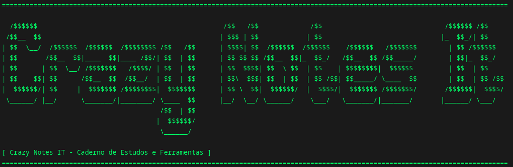

# Logs técnicos, automações de suporte e writeups de Cyber Security.
guest@crazynotesit:~$ ls -la ./posts/
- 2026-05-27 [POST] Por quê o Crazy_Notes_IT foi criado
guest@crazynotesit:~$ tree ./projects/
Infrastructure as Code & Automation/
Suporte-Windows
Descrição: Automação em PowerShell para suporte geral do windows, sendo ideal para pode resoluções de problmeas do sistesma, fazer inventario e muito mais.
Status: Produtividade / Ativo
» [Ver código fonte no GitHub]Cybersecurity/
scanner-portas-python
Descrição: Script customizado de Port Scanning focado em redes internas corporativas.
» [Ver código fonte no GitHub]Todo o conteúdo, scripts e writeups presentes aqui possuem finalidade exclusivamente educacional e de pesquisa. Nenhuma técnica documentada deve ser utilizada em ambientes sem autorização explícita. O uso indevido dessas informações em sistemas de terceiros é de total responsabilidade do usuário.
guest@crazynotesit:~$ whoami --contact
-----[ AUTOR ]------ » Nome: Perez9872 » Information Security Analyst -----[ REDES E CONTATO ]----- » LinkedIn » Medium
# Sinta-se livre para se conectar e trocar ideias sobre projetos e palestras.